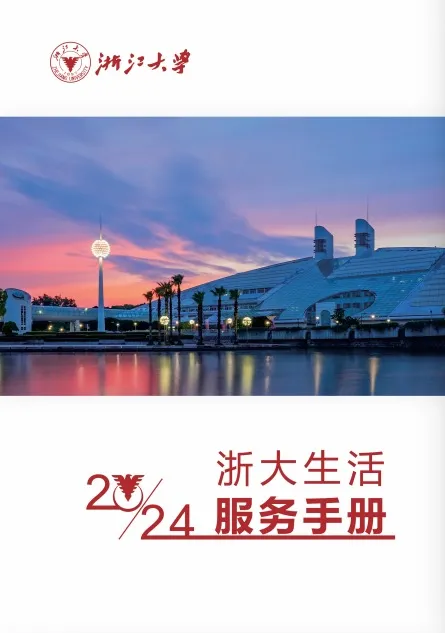
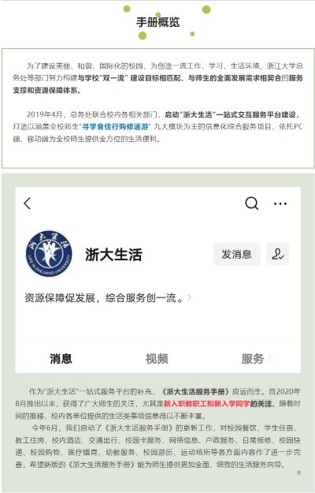
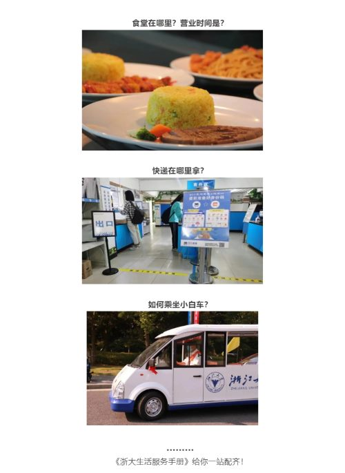

浙大生活
活在浙大
尘心
## 浙大生活公众号 [《浙大生活服务手册》，你值得拥有！](https://mp.weixin.qq.com/s/e5hIv7GCRlUEkmr5c3J5ng) <div class="flex-container">    </div> --- ## 浙大生活公众号 <iframe src="zdfwsc.pdf" width="99%" height="80%" scrolling="no" style="border:3px solid #666; margin-bottom:5px; max-width: 100%;" ></iframe> --- ## 浙大生活公众号 <div class="center"> <p class="fragment shrink">啊?! 那我的分享……到此为止吧 orz </p> <span class="fragment fade-up"><span class="fragment strike">谢谢大家！</span></span> <p><span class="fragment">就这？</span></p> <p><span class="fragment">NO！<span class="fragment">这手册真有用的话，要学长干嘛/:doge</span></span></p> <span class="fragment">这才刚刚开始</span> </div>
## 活在浙大 视频节选自：<br>[如何抵抗大学环境带来的松懈？ _ 开学大实话【宋浩老师官方】_bilibili](https://www.bilibili.com/video/BV1Jn4y1f7S2/?spm_id_from=333.880.my_history.page.click&vd_source=1c34606945ec9fdc94b5ac937f274689) <div class="video-container"> <video controls> <source data-src="songhao.mp4" type="video/mp4"> </video> </div>
## 享受亿下生活 以下内容来自[浙大本科新生指引](https://zjuers.com/welcome/) <iframe src="https://zjuers.com/welcome/life/campus/" width="99%" height="73%" style="border:3px solid #666; margin-bottom:5px; max-width: 100%;" ></iframe>
## 享受亿下生活 讲一些个人的生活体验 我将会从以下五方面简要讲讲我是怎么“活在浙大”的， 简单来讲就是“衣食住行玩” #### 1.华冠丽服 #### 2.五味俱全 #### 3.蓬门荜户 #### 4.一帆风顺 #### 5.探险猎奇
## Part 0.信息差 正式开始之前，我还是抹平一下信息差，来你浙应该有的公众号 <div class="text-container"> <ul> <li>浙大官微</li> <li>本科生院</li> <li>求是学院</li> <li>浙大体艺</li> <li>浙大微学工</li> <li><b>浙大资助</b></li> <li>浙大团委</li> <li>浙大生活</li> <li>浙大后勤</li> <li>浙江大学图书馆</li> <li>浙大学生公寓管理服务中心</li> <li>三大学园、学院的公众号</li> </ul></div> <div class="text-container"> <ul> <li>ZJUCS 潮汕同乡会</li> <li>CC 98</li> <li>浙大青志</li> <li>浙大校友总会</li> <li>E志者EVA</li> <li>浙大社会实践指导中心</li> <li>彩虹人生</li> <li>路老师的 nonsense</li> <li>大声喧哗指南</li> <li>全员光滑</li> <li>二月十三</li> <li>……更多的自己探索吧</li> </ul></div>
## Part 1.华冠丽服 人是衣裳马是鞍，这里我就随便唠两句 <h5>俗话说“上有天堂，下有苏杭。”<h5> 杭州作为人间天堂，又有沆洲和炕州之名，夏天很热，冬天很冷，雨季多雨…… 穿啥该咋穿，大家应该也心里清楚 最近开始转凉了，可以提前添置一些秋季的衣服， 快入冬那会，可以提前买冬天穿的，建议网上买， 如果到时候来不及，也可以去周围大商城买。
## Part 1.华冠丽服 ### 周边的大商城： - 西溪银泰； - 龙湖西溪天街； - 城西银泰； - 龙湖紫荆天街； - 五洲国际； - 古墩印象城；
## Part 2.五味俱全 <b>！重要提示：这一章内容有点多，而且都是个人观点，不具有代表性，不想听的可以睡一觉或者干自己的事情</b> 整体来说，本章节分为校内和校外两节，具体有如下划分 <h4>校内</h4><h5>食堂那些事儿</h5><h5>校内餐饮</h5> <h4>校外</h4><h5>top级潮汕菜</h5><h5>周边美食</h5>
## 校内 <b>！重要提示：这一章内容有点多，而且都是个人观点，不具有代表性，不想听的可以睡一觉或者干自己的事情</b> ### 食堂那些事儿~ 可以看看推文[食在浙大 | 纵享好“食”光，一起开始美食之旅！](https://mp.weixin.qq.com/s/kQCWNa-XAo3Iy1J_KbhThg) 里面介绍了你浙的所有食堂，食堂位置找不到可以地图看看， 说到地图，这里给[校园地图](https://map.zju.edu.cn/index)打个广告（没收钱），特别是探索跨校区校园的时候很实用，比如我去了海宁国际校区……之后的就不需要我说了吧 作为比较高品位的潮汕人，我一般都吃银泉，速选区/西北风味，关于食堂的测评，可以看一下 98 的这个帖子（萌新也可以直接上98搜这个标题，老东西也可以）~ 【美食天地】紫金港食堂完全测评 https://www.cc98.org/topic/5380397 复制本链接，打开【CC 98】微信小程序，直接查看本帖！
## 校内 <b>！重要提示：这一章内容有点多，而且都是个人观点，不具有代表性，不想听的可以睡一觉或者干自己的事情</b> ### 校内餐饮 - 茶饮类 - 麦思威咖啡： 你浙的品牌，很多地方都有，比如东二、西一、学园楼下、主图等，也可以地图看看，那个浙大生活有一篇[推文](https://mp.weixin.qq.com/s/q93ueA6UishthIaFL8gIeA)也写了； - 星巴克： 留食东面、银泉转弯口； - 瑞幸/库迪咖啡： 白沙综合楼二楼在移动营业厅里面、玉湖尧坤楼教超、小剧场教超； - 古茗： 银泉餐厅对面，堕落街（校外） - 茶百道：蓝田教超旁边、翠柏（白沙邮局对面） - 其他校内没有的学校周边基本都有，堕落街、西溪银泰、天街这些地方
## 校内 <b>！重要提示：这一章内容有点多，而且都是个人观点，不具有代表性</b> ### 校内餐饮 - 快餐类 - 肯德基： 银泉餐厅东侧； - 麦当劳： 东二门出门左转，格局打开好吧； - 鸭血粉丝：银泉餐厅南侧； - 其他类 - 求是生活，启真教育超市：应该每个学园也都有，小剧场也有 - 自助机：宿舍楼下、东教、西教、主图、风操、东西操等地方都有不同类型的自助机 - 水果店：应该园区楼下都有，校外也有 - 求是茶业：蓝田、翠柏都有 - 蓝田烘培店：蓝田，味道一般，当早餐太贵
## 校内 <b>！重要提示：这一章内容有点多，而且都是个人观点，不具有代表性，不想听的可以睡一觉或者干自己的事情</b> ### 小插曲，唠点日常 早餐选择 吃不吃，取决于你起床时间和上课时间（） 午餐选择 上学的时候，上午最后一节课和下午第一节课中间只有一个小时休息 在东教可以选择麦思威餐吧或者点外卖送到东二门， 西教可以选择订餐（浙大生活/浙大后勤网上订餐）或者临湖餐厅
## 校外 <b>！重要提示：这一章内容有点多，而且都是个人观点，不具有代表性，不想听的可以睡一觉或者干自己的事情</b> 98/朵朵有挺多分享贴的，可以参考，我这里讲讲个人吃的不错的 ### top级潮汕菜 潮汕人自然推荐潮汕菜和粤式点心，都很好吃，力荐 - 如轩海鲜砂锅粥潮汕菜：盛龙街 - 庭鲜现切牛肉火锅：堕落街转角处 - 泉市鲜活牛肉店：城西银泰城 - 伙头记潮汕海鲜砂锅粥：龙湖天街 - 广东潮汕肠粉：迁址了 (⋟﹏⋞) 两家牛肉火锅看个人口味吧，我更偏向于前者
## 校外 <b>！重要提示：这一章内容有点多，而且都是个人观点，不具有代表性，不想听的可以睡一觉或者干自己的事情</b> ### 周边美食😋 按地点划分，不分先后顺序，写完发现，杭州也不是美食荒漠啦（bushi 1. 北街（蓝田北门出去） - 北街烧烤：还行吧，但夜宵近点也就烧烤，价格取决于你吃啥，有个【北街烧烤外卖群】，快叫善良大方的学长姐们拉你们进群吧~ - Tony 家：好吃😋，特别是那个菠萝炒饭，小贵 - 咖啡吧：好多家，可以刷夜，不过我没去过 （前面两家在出门左转，其他的在出门右转）
## 校外 <b>！重要提示：这一章内容有点多，而且都是个人观点，不具有代表性，不想听的可以睡一觉或者干自己的事情</b> ### 周边美食😋 2. 堕落街（东一门出去，校医院后面） - 烤冷面：小吃，好吃不贵，20 以内 - 正新鸡排：闻起来挺香的，但个人不喜欢这种油炸 - 旋转小火锅：实惠，自助火锅，味道很不错 - 张亮麻辣烫：全国连锁店，我就不废话了，好像可以送一瓶饮料，挺一般的其实 - 各种茶饮：霸王茶姬、古茗、蜜雪冰城、喜茶、陈文鼎黑糖珍珠奶茶等 - 庭鲜现切牛肉火锅：好吃，沙茶酱比较普宁，价格取决于食力
## 校外 <b>！重要提示：这一章内容有点多，而且都是个人观点，不具有代表性，不想听的可以睡一觉或者干自己的事情</b> ### 周边美食😋 2. 堕落街（东一门出去，校医院后面） - 云南鲜花米线：云南人都不知道有鲜花米线 (￢_￢)，开店买一送一去试了一下，只能说是能吃，米线也不如云南米线啊 - 桂林米粉：还行，只能说还行 - 朴代表拌饭：还可以，拌饭做的好的都差不多 - 新疆买买提烧烤：真西北风味，好吃，缺点是辣，我不喜欢 (╥╯﹏╰╥)ง - 各种小吃、快餐：可以自己探店试试，一些我光看名字我就觉得没胃口，没怎么尝试
## 校外-周边美食😋 <b>！重要提示：这一章内容有点多，而且都是个人观点，不具有代表性</b> 3. 浙港国际&宝港生活&剑桥公社（三地方挨得近，就在东一东二门中间这段路） - 麦当劳：怎么样懂得都懂 就不说了 - 肉本家：韩式烤肉很有名吧，最好提早去吃或者提前去拿号，不然要排好久，价格还可以 - 十三式：自助烤肉，味道也不错，就是贵了点 - 如轩：好吃爱吃，一碗砂锅粥下去啥事都不是事了，里面也有牛肉粿条（干炒牛河:-P）、潮汕菜和粤式茶点，价格取决于食力 - 德弘面馆：价格很实惠，饮料一元，味道也不错 - 二烧@本帮面：24 小时营业，味道也还行 - 淮南牛肉汤：差不多，银泉二楼速选也有； - 剑桥公社烧烤：还行吧，也适合多人聚餐； - 其他：贵州烙锅，麻辣香锅，重庆鸡公煲，名人小川料理（我不吃辣，这几家不予评价）
## 校外-周边美食😋 <b>！重要提示：这一章内容有点多，而且都是个人观点，不具有代表性</b> 4. 西溪银泰： - 新发现：银泰四还是五楼，吃起来还行，小贵； - 海底捞：银泰城中间，负一楼，懂得都懂，新生大学牲优惠应该十月十一月才有，去薅学长吧~； - 签千顺：银泰 B 层，串串香，还不错，就是有些比较辣的我没尝过 - 蛙喔：银泰四五楼，牛蛙火锅，喜欢的可以吃； - 银泰城奶茶店也很丰富，各大品牌基本都有吧
## 校外-周边美食😋 <b>！重要提示：这一章内容有点多，而且都是个人观点，不具有代表性</b> 5. 龙湖西溪天街 - 萨莉亚意式餐厅：还不错吧，全国连锁； - 椒爱水煮鱼川菜：听说还不错，笨人不吃辣； - 湘先生米小姐：湘菜，听说也还行，同样，笨人不吃辣； - 蝴蝶里粤菜点心：还不错吧，粤菜就没输过，类似茶楼； - 星平鸡饭粤菜小炒：没吃过，听说还不错； - 伙头记：砂锅粥，商场外围，还不错，而且不贵； - 潮汕夜档：不如如轩，偏潮州口味； - 其他的自己探索吧
## 校外-周边美食😋 <b>！重要提示：这一章内容有点多，而且都是个人观点，不具有代表性</b> 6. 城西银泰： - 苏小柳点心：价格还行，但是服务 emmm，忘上菜的事我碰到了两回，其他的吃起来还行 - 家府潮汕菜：对潮汕菜的评价可能都是不如如轩😂 - 点都德：粤式茶楼，全国连锁，还行但是有一丢丢杭化，价格偏高，可能就糯米鸡、红米肠这些如轩没有； - 新北京涮肉：潮汕人吃牛肉火锅撒，想吃涮肉的可以试试，小贵； - 味千拉面：全国连锁，味道还行吧； - 海底捞：不多说了； - 其他火锅、烤肉：就近原则吃，其他的店就没怎么尝试；
## 校外-周边美食😋 <b>！重要提示：这一章内容有点多，而且都是个人观点，不具有代表性</b> 7. 五洲国际&古墩印象城： - JIREH 7：韩国料理，整体还可以； - 永和大王：挺香的，也可以外卖； - 叫了只炸鸡：外卖，一般，看个人口味； - 海底捞：不赘述； - 湘先生米小姐：跟前面的应该差不多； - 其他：离学校也距离还行吧，其他的没去吃过
## 校外-周边美食😋 <b>！重要提示：这一章内容有点多，而且都是个人观点，不具有代表性</b> 8. 其他 - 文一西路：骆家庄西苑附近，有几家快餐，味道价格还行； - 文二西路：西城广场，衢州菜味道也还行 - 更多的自行探索吧~
## Part 3.蓬门荜户 0. 标题那些事儿~ - 你的到来让你浙蓬荜生辉！ - 比起家里住的，你浙的住宿确实一般 - 比起别的学校，其实还行 1. 网上自助服务：浙大学生公寓管理服务中心-iHome 2. 指路- [新生指引-园区](https://zjuers.com/welcome/dorms/qiushicollege/) 3. [住在浙大 | 那些年我们一起住过的宿舍](https://mp.weixin.qq.com/s/PZqv8ntRrBX1j6auYD2iFg) 4. 毕至居、洗衣房、健身房、自习室 1. 蓝田的话是每一幢寝室楼一楼都有毕至居和洗衣房 2. 健身房在蓝四 #### 大家都住进去了，我就不多说了吧╮(‵▽′)╭
## Part 4.一帆风顺 紫金港有多大，emmm 很大，在全国最大的校区里也排得上名吧，所以通勤还是要交通工具的。至于校外，可以看看新生指引啥的，或者缺德地图看看。 1. 小白、巴士的查询可以看浙大生活/浙大后勤，笨人有龟，不坐车~ 2. 共享电动车、共享单车 3. 电动车（小龟），现在有些人会根据大小细分为小龟、中龟、大龟 4. 自行车：按自己喜好来，普通的单车、山地车、公路车……
## Part 4.一帆风顺 ！下面是一些个人建议，也不具有代表性 我的小龟：雅迪换点兽 我的选择原则： - 买得起换电的就不要买充电的，续航好，比如骑换点兽，我能到处跑，在各个校区之间来回串 - 能买换电兽就别买别的牌子，换电站多，站点提供的电池也多 - 充电桩校内外应该挺多的，但是个人觉得不方便 - 当然，你要买更大的车，就可以不参考笨人的建议了 - 校内外骑车要注意安全，记得佩戴头盔，不然你可能就要与交警叔叔斗智斗勇了 - 至于车速，注意安全就好
## Part 4.一帆风顺 我的山地车是黑客 380，个人觉得骑起来还不错，有更高的速度追求可以试试换成山马胎或者公路车 然后，这里分享几条个人荡腿的路线（哪条路线看心情） 1. 短途（10-25 km）： 1. 紫金港校内绕圈圈，但是放不开 2. 紫金港-玉泉/西湖-紫金港 3. 紫金港-绕西溪湿地一圈-紫金港 3. 中程 （25-50km）： 1. 紫金港-之江-玉泉-紫金港（相当于来回走不一样的线路） 2. 紫金港-龙井/满觉陇-玉泉-紫金港（爬坡） 3. 紫金港-玉泉-西湖（顺路其实）-环湖骑-玉泉-紫金港/虎跑路-紫金港 4. 紫金港-虎跑路-之江（沿江骑）-西湖-紫金港（爬坡） 5. 紫金港-梅林北-宋城-之江路-西湖-紫金港（爬坡）
## Part 5.探险猎奇 <b>！重要提示：这一章内容有点多，而且都是个人观点，而且适配那些喜欢lalaso的小伙伴， 不具有代表性，不想听的可以睡一觉或者干自己的事情</b> 整体来说，本章节分为<b>七大校区</b>和<b>杭州之旅</b>两节 - 七大校区 - 七个校区分别是：港泉溪池江舟海 - 这一节会分别说说浙大各大校区有什么，你能在浙大干什么（doge） - 杭州之旅 - 记录了笨人大概去了的地方和想去但还没去的地方 - 大概有西湖景区及周边，西溪国家湿地公园、植物园、良渚遗址、宋城、拱宸桥、钱塘江、武林广场等
## Part 5.探险猎奇 <b>！重要提示：这一章内容有点多，而且都是个人观点，而且适配那些喜欢lalaso的小伙伴， 不具有代表性，不想听的可以睡一觉或者干自己的事情</b> ### 0.骑行 Emmm，热爱是这样子的，一般晚上骑，偶尔早晨骑，我的路线前面说了，欢迎约我~~ ### 1.浙大校区一日游 浙大有七个校区，港泉溪池江舟海，都与水有关，前五个在杭，舟山校区自然在舟山，海宁校区自然也在海宁， 校园内的景点可以看看[校园地图](https://map.zju.edu.cn/index)， 我下面说几个典型的，也可以看看一篇古老的推文 [大美浙大！](https://mp.weixin.qq.com/s/mOjYfuz_LlLIWLKf88SDIQ)
## 1.浙大校区一日游 ### 1.1 紫金港——深流入港，启真水暖 - 推荐报个定向越野体育课，体验一下浙大校园的丰富多彩，欣赏一下你浙的大好风光，老师的话推荐刘卫中，体力好的话可以每学期都上，他还会记得你 1. **迪臣路、宜山路、藕坊路**：这几条主干道的风景也不错，就是树不够繁茂，热的时候不够阴凉 2. **大草坪**：指的是启真湖边上的，好像也叫什么坡（emmm，尊重一下像我这样的单身人士），组织或者社团好像也可以在这里野餐 3. **校友林、南华园、湖心岛**：从文广南边的小路进去，穿过校友林，一直走，进入大草坪，往南走到南华园，往东走到湖心岛，过桥，到东教后面，这一路风景还不错，定向越野圣地（bushi） 4. **医学科研楼南边那一片**，感觉也挺不错，有银杏和梅园啥的，也是定向越野圣地 5. **其他标志性建筑或景观**：南大门、求是大讲堂、求是鼎、主图、基图、古籍馆、艺考博物馆、方闻馆、月牙楼、灿若星辰灯、下沉广场、启真湖、求是湖、阳明桥
## 1.浙大校区一日游 ### 1.2 玉泉——书生如玉，新知如泉 1. 玉泉校区依山而建，自然景观挺好的，也有一些人文景观，像池塘、亭子、石碑、雕塑等。因为是定向越野在里面跑过，平时骑行在里面也只是瞎逛逛，所以很多叫不出名字。 2. **正门**：真正的浙大大门 3. **Bg 树**：好像最初是叫报告树？传言是正大门门口那棵大树，和 bg 请客的意思相关，感兴趣的话可以自己去了解一下 4. **靓园和怡膳堂**：就是食堂啦，名字好听 5. **求是村**：在玉泉校区的东面，从正门或新桥门过路口到对面即是。 6. **后山（老和山）**：玉泉校区西面那座不高的青山就是老和山，在教七往西上坡到顶的地方有个小门，有台阶可上，可以去爬山和看日出喔。 7. （后面两个是校外的其实）
## 1.浙大校区一日游 ### 1.3 西溪——东临西溪，文曲悠悠 - 好像很小，有一次骑行进去过，风景还行，我也不知道介绍啥，可以自己去看看，“怀葛亭，亭前一池绿水，映着绿树潇潇，有大隐隐于市之韵。” ### 1.4 华家池——华池春晓，塔影长堤 1. 华家池也是定向越野考试跑过，喜欢 lalaso 的我自然多逛了几圈，里面风景宜人，好像中间的水池就叫华家池，三面环绕，一岛、六亭、一长廊，地方不大，很快就能走完。华家池碑位于华家池东侧，池边有连廊，池中有塔，草木皆景。 2. **华家池碑**：“碑前是你的名字，碑后是你的故事。”适合拍照打卡 3. **小广场**：不知道叫啥，跑定向越野经过那，广场中心有喷泉、奔马雕塑 4. **一潭印月**：在华家池上有一座小岛，岛上有那个塔，也就是一潭印月 5. **紫藤长廊**：在池边，赏心悦目，定向越野都不想跑起来，在那慢慢走，看风景
## 1.浙大校区一日游 ### 1.5 之江——钱塘江畔，群英之栖 1. **最美校区**：之江大学原是基督教美北长老会和美南长老会在中国杭州联合创办的一所教会大学，也曾是中国的十三所基督教大学之一，1958年归入浙江大学，现为法学院所在地。之江校区是全国重点文物保护单位，同时也是浙江大学最美的校区。（新生指引是这么说的） 2. 个人去过几次，整体印象是**一座隐匿在山坡上森林里的校园**，有种深山藏古寺般别致的韵味，校区不大，风景很美，但是要爬山，可以自己去探索探索。 3. **大香檀树**：进门引入眼帘的就是两颗大香檀树，彰显着百年校园的古老 4. **钟楼、大草坪**：标志性建筑，可以拍照打卡 5. 印象中还有一条小溪和一座桥，那里也很好看，我也不知道叫啥名字╥﹏╥...
## 1.浙大校区一日游 ### 1.6 舟山——舟行沧海，山河尽安 - 不在杭州，我也没去过，讲不来 - 那个古老推文这么描述： - “旭日东升，湖若鲛人之珠；华灯携彩，潭似潜龙之栖。 - “观景台前，湖水清明，教学楼坐落湖畔，墙上刻着校歌的旋律，侧耳倾听，那经年留传的乐章，激荡着流水淙淙。 - “塔落容秀景，潭影空人心，启真塔收纳四方景观，又映入水中阅尽繁华。吞吐山河，是海纳四方之心怀。”
## 1.浙大校区一日游 ### 1.7 海宁——四海归宁，天下来同 1. “ 海宁国际校区群绿镶湖，红墙钟楼万种风情，穷目所至尽是开阔齐整气象。” 2. 我的第一印象是这才是真的**东方剑桥**！整个校园，兼具浙江大学传统建筑风格与“新古典主义”欧式建筑风格，非常漂亮。可惜，这有钱人的地方，不属于我。 3. **钟楼**：好像可以上去，在上面能眺望整个校区，当时去的时候没上去 4. **图书馆**：英伦味十足，风格别具一格 5. **中心湖和长桥**：海宁中间有一片湖，一线长桥横跨湖面，风景别致。 6. **食堂**：贵了点，有各国特色食物。
## Part 5.探险猎奇 ### 2. 杭州之旅 <b>！重要提示：这一章内容有点多，而且都是个人观点，而且适配那些喜欢lalaso的小伙伴， 不具有代表性，不想听的可以睡一觉或者干自己的事情</b> - 2.1 西湖景区 - 2.2 西溪国家湿地公园 - 2.3 植物园 - 2.4 良渚遗址和良渚博物院 - 2.5 宋城 - 2.6 拱宸桥 - 2.7 钱塘江&钱塘江大桥 - 2.8 武林广场 - 2.9 其他
## 2. 杭州之旅 ### 2.1 西湖景区 - 众所周知，西湖是杭州的那个啥，单纯看看风景，略显乏味，但是周边的景观别有韵味。 - 最典型的就是“西湖十景”了，分别是：平湖秋月，苏堤春晓，断桥残雪，雷峰落照，南屏晚钟，曲院风荷，花港观鱼，柳浪闻莺，三潭印月，双峰插云；六七月份在曲院风荷看荷花是一大特色。西湖十景基本都是沿湖一带的，开放式公园，不收钱（除了湖心亭、三潭印月和南屏晚钟、双峰插云外） - 断桥还能看日出捏 - 西面有杨公堤，骑行小白爬坡冲破的不错场所 - 背后的山中，有龙井村、虎跑泉、灵隐寺、法喜寺、太子湾公园，都挺有名的，我就不赘述了 - 至于来了吃什么，自己想办法，或者小红书看看
## 2. 杭州之旅 ### 2.2 西溪国家湿地公园 - 5 A 级景区，就在紫金港旁边吧，有湿地景观也有人文景观，可以野餐（bushi）我也不知道怎么描述，去了就知道。 ### 2.3 植物园 - 玉泉旁边那个，风景还不错，定向越野也去跑过一次 ### 2.4 良渚遗址和良渚博物院 - 良渚遗址也在2019年被列入世界遗产名录。去看看，总有收获。不过看到的就是遗址，而且很大，做好心理准备。 - 良渚博物院，思修课说不定就去了这里
## 2. 杭州之旅 ### 2.5 宋城 - 千年古城, 从外面看看还不错，可以拍照打卡，好像里面有演出啥的，挺贵的，感觉性价比不高 ### 2.6 拱宸桥 - 风景很漂亮，适合拍照，好像方伟老师的摄影课会组织一次出游就是去拱宸桥（别问我为什么知道） ### 2.7 钱塘江&钱塘江大桥 - 江两边的风景都不错，不知道杭州能不能观潮，之前是去海宁盐官看的 - 江风也很凉快，江这头可以看日出，江那头可以看日落（）
## 2. 杭州之旅 ### 2.8 武林广场 - 周围新建高楼林立，有电信大楼、杭州大厦、杭州剧院、杭州国际大厦、杭州百货大楼等。遂成杭城繁华而花园式的中心广场 - 有武林夜市，但是确实也不是很晚 - 物价emmm，小心被宰，买之前先看看 ### 2.9 其他： - 近一点西湖区内还有像玉皇山、云栖竹径、六和塔等，不擅长描述的我就不一一赘述了； - 远一点，还有千岛湖、新叶古村、东方文化园、森林公园、青山湖等，待各位自行慢慢探索。
<div class="middle center"><div style="width: 100%"><div class="large-font"> <p>谢谢大家orz</p></div></div></div>